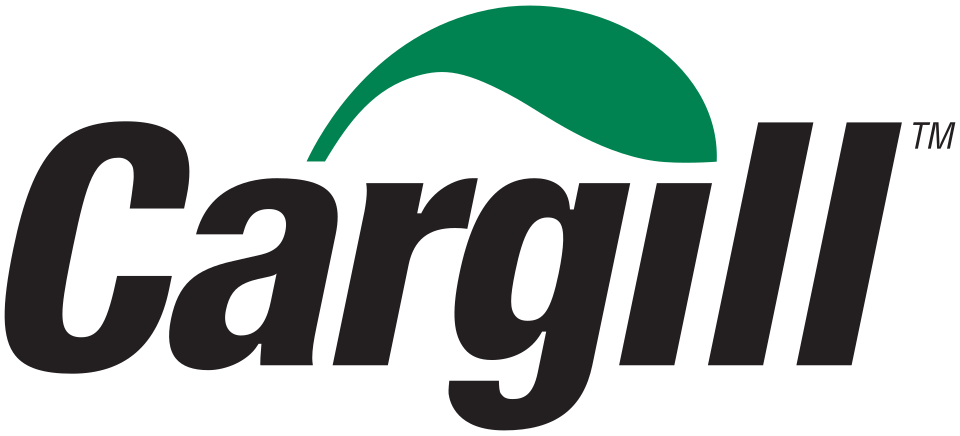
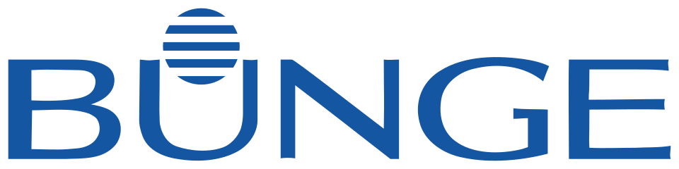
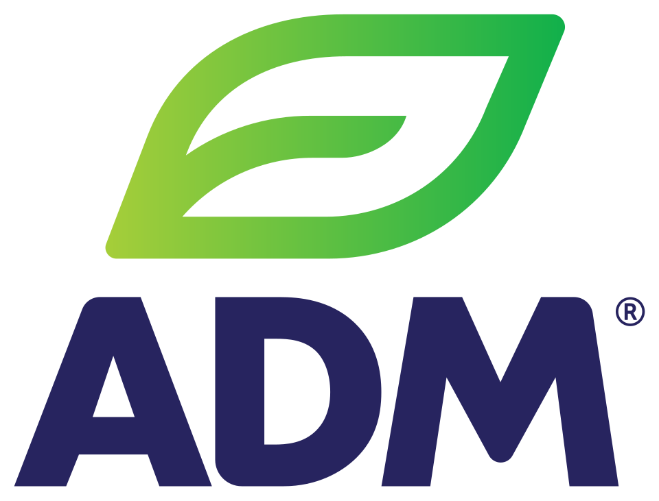
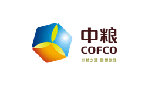
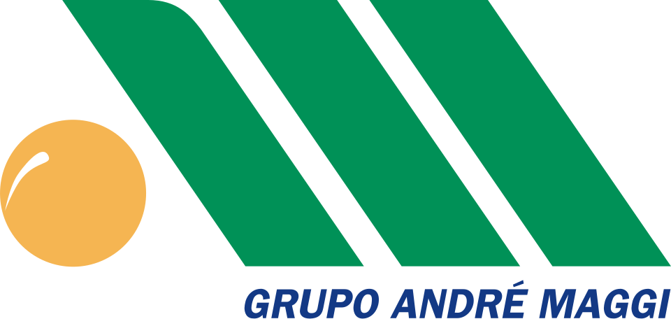
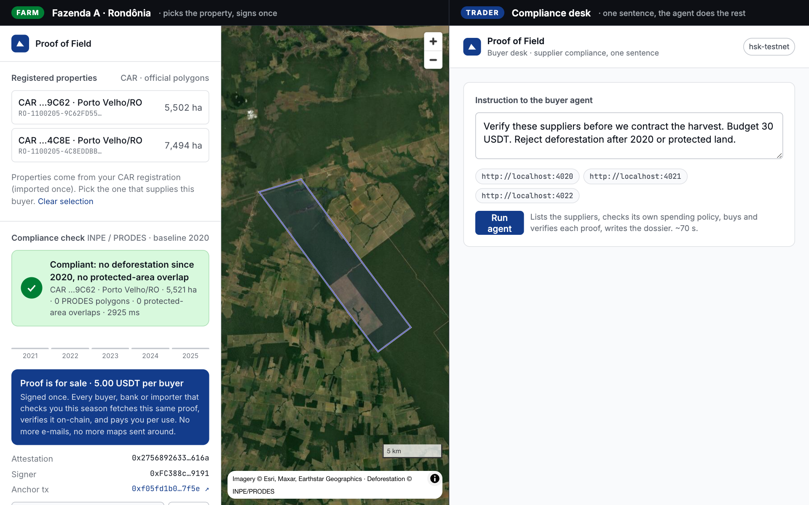
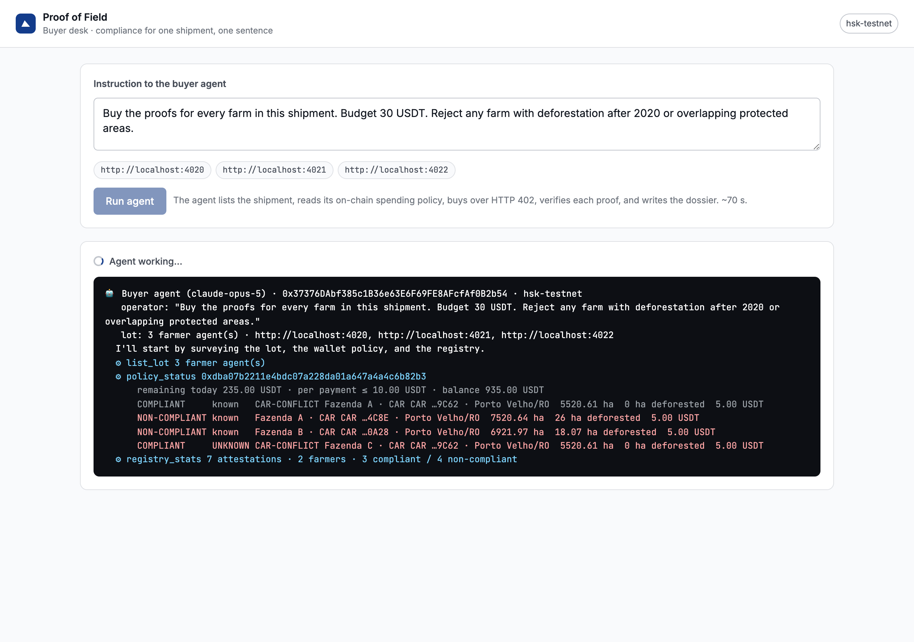

The compliance paper behind every soy and beef shipment, turned into a portable proof: signed once by the farm, verified by anyone, bought by AI agents.
Built at the EAG Global Buildathon Floripa · Live on HSK Chain testnet
1




Buys from thousands of farms, blends into lots at silos and ports, sells to importers worldwide. Margins are thin; volume is everything.
EU by law (EUDR: importer liable, fines up to 4% of turnover). Banks for credit. China, the largest buyer, moving to the same 2020 baseline.
Teams e-mail suppliers, pay due-diligence vendors per farm, assemble PDFs. Every buyer asks again. The check is cheap; the coordination isn't.
Compliance team e-mails each supplier for CAR, maps and documents.
Full farm polygon, registry, deeds. To a stranger. Again for the next buyer.
Trader pays a provider per farm to cross-check against PRODES, embargoes, CAR.
A document nobody outside can verify. Bank asks again. Importer asks again.
The check itself is cheap. The coordination around it is what costs weeks.
3Like a passport instead of a fresh notary letter for every trip. What remains is thin and replaceable: someone vouches that the key belongs to the farm (the co-op, a bank, the government).
4No account, no password. The farmer agent holds the farm's key, like a wallet. Properties are imported once from SICAR, the farmer's own CAR export by CPF. Production: gov.br sign-in, automatic import. Small farms: the cooperative hosts the agent; the farmer authorizes from a phone.
A trader, bank or co-op already has contracts with its suppliers. At onboarding it registers each supplier's agent address, like a bank account, and allow-lists the key. Its agent asks those suppliers, nobody else. An unknown key offering someone's farm is refused, even with a valid-looking proof.
The hash of every attestation, who anchored it, revocations. Payments in stablecoin through the buyer's AgentWallet, with limits. Anyone verifies; nobody controls it. The same proof serves every buyer that asks this season.
Banks, importers and cooperatives work the same way: they talk to the suppliers they already know, and the proof they get is the same one.
5Why an agent and not a script: the rules change per buyer, per country, per lot. A script breaks; an agent reads the instruction.
Why a chain and not a database: the trader's agent and the farmer's agent don't trust each other, and neither should have to trust a middleman.
The check is SQL, and we run it locally. The trade is not: two companies that don't trust each other, two programs paying each other, and an AI holding money it cannot misuse.
6
PRODES deforestation (RO, MT, GO, Amazon + Cerrado, ~103k polygons) + indigenous lands + conservation units. Under a second on a laptop. Next: DETER alerts, IBAMA embargoes.
Area, ha deforested after 2020, verdict, source, timestamp. Signed by the farmer.
attest(hash, fieldId). Only commitments on-chain. Revocable by the farmer.
x402 v1 shape. On-chain USDT transfer, replay-protected, policy-enforced.
Signature → same farmer anchored it → not revoked. Markdown dossier with every tx.

A co-op answers for every member farm, to every buyer, every season. Today: spreadsheets and e-mail. One farmer agent per member, one proof per property, and the co-op's paperwork collapses.
Rural credit requires deforestation-free evidence. Banks buy the same proof the trader buys, verify it on-chain, and stop paying per-farm vendors.
Once proofs already circulate among their suppliers, the trader's compliance desk plugs in a buyer agent and clears its suppliers in minutes instead of weeks, before every contract and again each season.
Built to scale: every farm runs its own agent, every buyer its own; one public registry; contracts and agents generic enough for any private dataset sold as a proof.
Pilot partners wanted: a cooperative, a bank, a trader · github.com/Muril0zz/proof-of-field
9